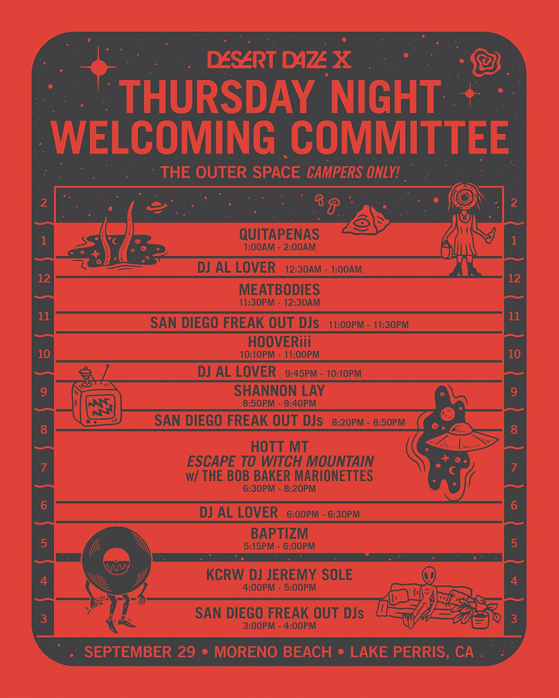
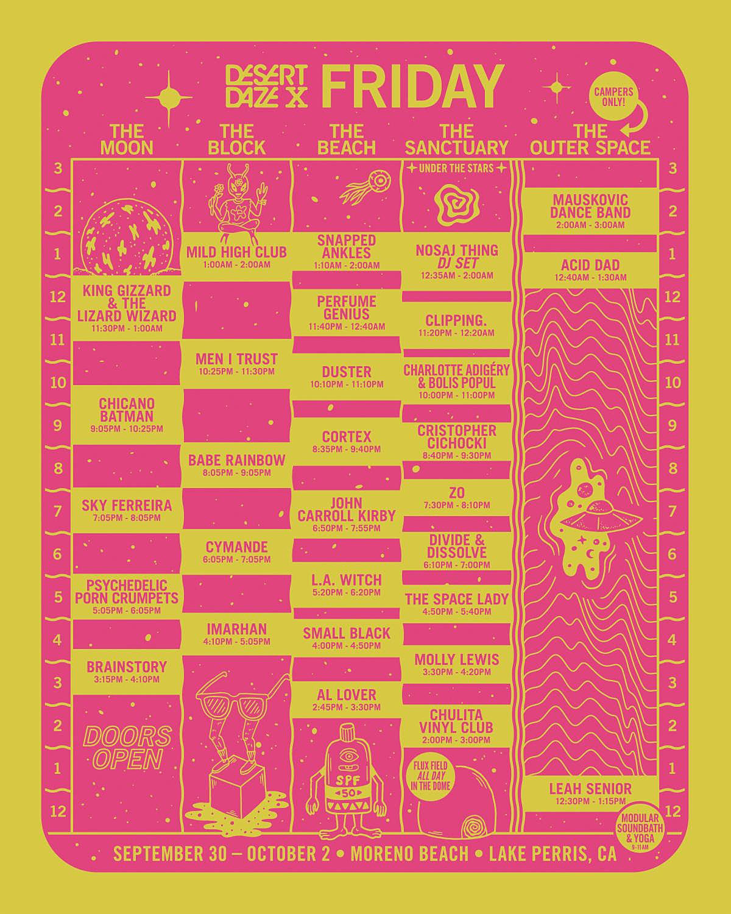
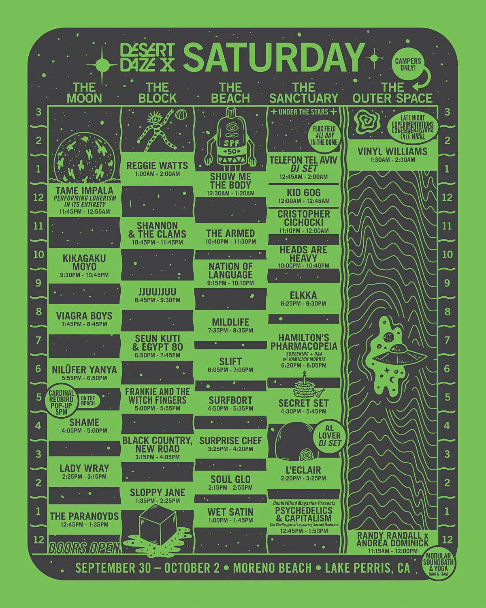

This layout of this site is based on style code provided by Andy Cochran, and modifed by the site creator.
Check out the original 2022 Desert Daze Festival Map created by Mermaid Hex and Obelisk Teleporter.



Credit: desertdaze.org/about